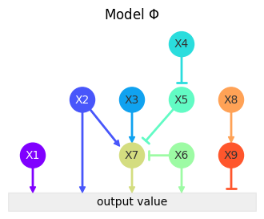
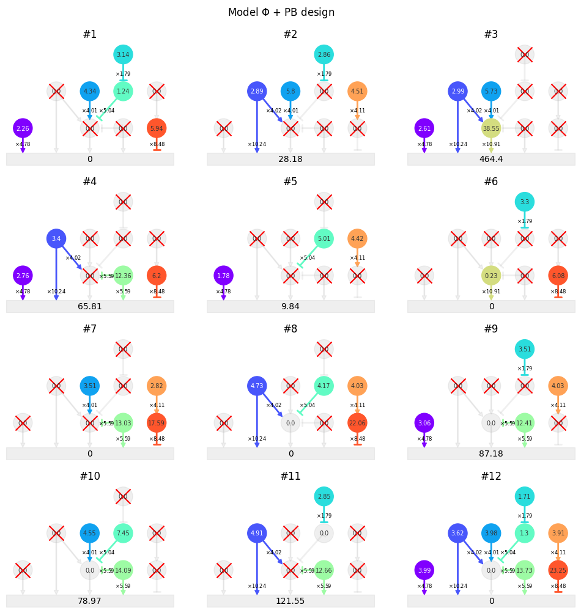
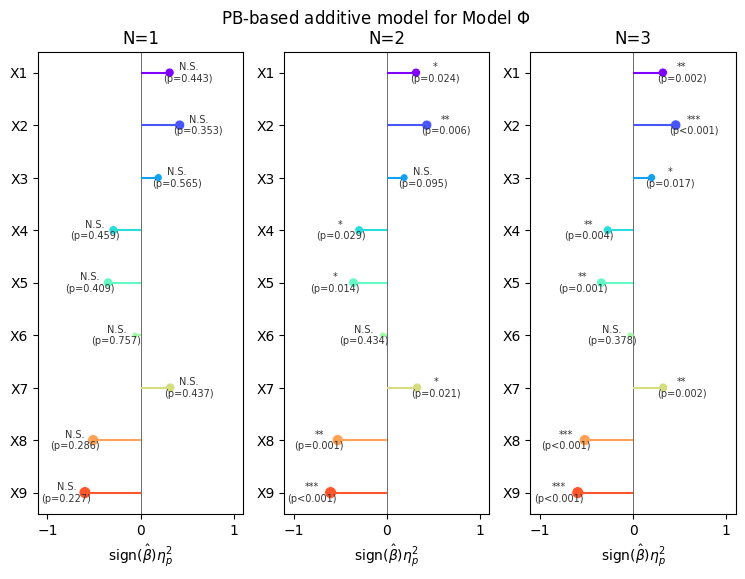
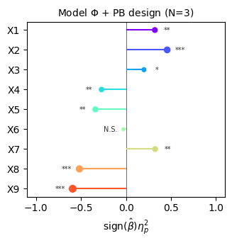

Sim1 with PB
[1]:
from typing import NamedTuple
import matplotlib.pyplot as plt
import numpy as np
import pandas as pd
import seaborn as sns
import statsmodels.api as sm
from biodoe_tools.design import DOE, PlackettBurman
from biodoe_tools.preferences import kwarg_savefig, outputdir
from biodoe_tools.simulation import Sim1, MLR
[2]:
class Config(NamedTuple):
savefig: bool = True
out: str = outputdir
design: DOE = PlackettBurman
sim_name: str = r"Model $\Phi$"
run_names: list = None
preffix: str = "pb_"
suffix: str = ".pdf"
conf = Config()
[3]:
fig, ax = plt.subplots(figsize=(4, 3))
Sim1().plot(ax=ax)
ax.set_title(conf.sim_name);

[4]:
fig, ax = plt.subplots(4, 3, figsize=(12, 12))
model = Sim1()
model.simulate(
design=conf.design, plot=True, ax=ax,
titles=conf.run_names
)
fig.suptitle(f"{conf.sim_name} + {model.design().name} design", y=.93);
# if conf.savefig:
# fig.savefig(f"{conf.out}/{conf.preffix}sim", **kwarg_savefig)

[5]:
fig, ax = plt.subplots(1, 3, figsize=(9, 6))
for i, a in enumerate(ax):
model.simulate(n_rep=i + 1)
mlr = MLR(model)
mlr.plot(ax=a, anova=True, display_pvals=True)
fig.suptitle(f"{model.metadata['design']}-based additive model for {model.name}", y=.95)
# if conf.savefig:
# fig.savefig(f"{conf.out}/{conf.preffix}sim_mlr", **kwarg_savefig)
[5]:
Text(0.5, 0.95, 'PB-based additive model for Model $\\Phi$')

[6]:
fig, ax = plt.subplots(figsize=(3.6, 3.2))
model.simulate(n_rep=3)
mlr = MLR(model)
mlr.plot(ax=ax, anova=True, xscales=[1.1, 1.1], jitter_ratio=.07)
ax.set_title(f"{model.name} + {model.metadata['design']} design (N=3)", fontsize="medium")
if conf.savefig:
fig.savefig(f"{conf.out}/{conf.preffix}sim_mlr_n=3{conf.suffix}", **kwarg_savefig)

[7]:
fig, ax = plt.subplots(3, 3, figsize=(12, 12))
plt.subplots_adjust(hspace=.3)
model.scatterview(ax=ax)
fig.suptitle(f"{conf.sim_name} analyzed with {model.metadata['design']} design (N={model.metadata['n_rep']})", y=.92);
# if conf.savefig:
# fig.savefig(f"{conf.out}/{conf.preffix}sim_res_n={model.metadata['n_rep']}", **kwarg_savefig)

[ ]: